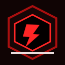

PLUGIN OFICIAL · 1.0.0
Permadeath
Al morir, el jugador queda temporalmente en espectador, recibe una cuenta atrás para revivir y conserva una copia completa de su inventario en cofres en el lugar de la muerte.
- Conserva los 36 slots, armadura y mano secundaria; crea cofres adicionales si hace falta.
- Reproduce el trueno del tridente y anuncia la causa exacta de muerte en Discord.
- Comandos de administración:
/permadeath on,/permadeath offy/permadeath time 2 hours.